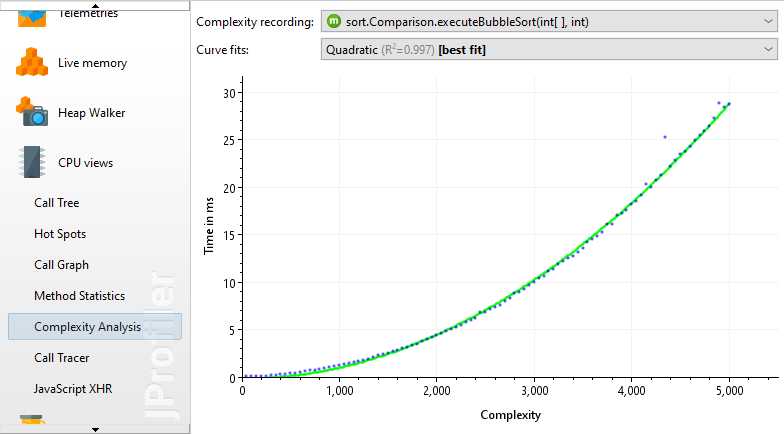

The complexity analysis view allows you to investigate the algorithmic complexity of selected methods depending on their method parameters.
To refresh the details on big O notation, an introduction to algorithmic complexity and a comparative guide to complexities for common algorithms are recommended readings.
First, you have to select one or more methods that should be monitored.
For each method, you can then enter a script whose return value of type
long is used as the complexity for the current method call. For example, if one of the method
parameters of type java.util.Collection is named inputs, the script
could be inputs.size().
Complexity recording is independent of CPU recording. You can start and stop complexity recording directly in the complexity analysis view or by using a recording profile or a trigger action. After recording has been stopped, a graph with the results is displayed plotting the complexities on the x-axis against the execution times on the y-axis. To reduce memory requirements, JProfiler can combine different complexities and execution times into common buckets. The drop-down at the top allows you to switch between the different configured methods.
The graph is a bubble chart, where the size of each data point is proportional to the amount of measurements in it. If all measurements are distinct, you will see a regular scatter chart. In the other extreme, if all method invocations have the same complexity and execution time, you will see a single large circle.

If there are at least 3 data points, a curve fit with common complexities is shown. JProfiler tries curve fits from several common complexities and initially shows you the best fit. The drop-down for the curve fits allows you to show other curve fit models as well. The R2 value embedded in the description of the curve fit shows you how good the fit is. The models in the drop-down are sorted in descending order with respect to R2, so the best model is always the first item.
Note that R2 can be negative, because it is just a notation and not really the square of anything. Negative values indicate a fit that is worse than a fit with a constant line. The constant line fit always has an R2 value of 0 and a perfect fit has a value of 1.
You can export the parameters of the currently displayed fit by choosing the "Properties" option in the export dialog. For automated analysis in a quality assurance environment, the command line export supports the properties format as well.